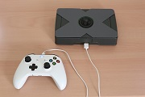

|
name: | ましぐれ / mashigure |
|---|---|---|
| place: | Kyoto | |
| e-mail: | mashiure ｱｯﾄ live ﾄﾞｯﾄ jp | |
| twitter: | @mashigure | |
| nico-video: | mylist/37724166 |
Biography
けいはんな学研都市らへんの山間部出身。現京都のソフトウェア開発者。 大学・大学院では情報工学を専攻し、在学中に先輩や同級生の影響で電子工作やMakeカルチャーに興味を持つ。 NT京都2013への出展を機にニコニコ技術部などのイベントに出展し始め、 2015年にはMakerFaire台北で海外初出展。同年MakerFaireベルリンに出展し、Maker of Merit （ブルーリボン賞）を受賞するなど、 現在に至るまで趣味の開発とイベント出展の活動を続けている。代表作は「あの楽器」。
2013年7月から「真時雨」名義、2017年から「ましぐれ」名義で活動中。
趣味の開発プロジェクト
趣味で作った製作物の中から、代表作を紹介します。その他の作品は別サイト（Blog）を参照してください。
あの楽器
 あの楽器とは、【初音ミク】Innocence【3DPV】 に登場する、初音ミクが弾いている架空の楽器こと。
色々な人が開発した様々なバージョンが存在します （あの楽器についてはこちらを参照）。
ましぐれ作成モデルの特徴は「LEDパネル」「半透明鍵盤」「eVocaloid音源搭載」「楽器として実際に演奏可能」など。
あの楽器とは、【初音ミク】Innocence【3DPV】 に登場する、初音ミクが弾いている架空の楽器こと。
色々な人が開発した様々なバージョンが存在します （あの楽器についてはこちらを参照）。
ましぐれ作成モデルの特徴は「LEDパネル」「半透明鍵盤」「eVocaloid音源搭載」「楽器として実際に演奏可能」など。
blog記事を読む・
動画を見る
PicoPico Box （ピコ箱）

ピコピコ音が出る箱型ガジェットです。ゲームのコントローラを使って演奏することができます。
また、PCにつなぐとUSB-MIDI機器として認識されるので、PC側のソフトウェアと組み合わせて色々な演奏が可能です。
プロジェクトページを見る
Raspberry Pi内臓ポケミク
学研大人の科学から発売されている『ポケットミク』と言う初音ミクの声で歌うキーボードがあります。
これだけでもスライタス（ペン）を使って演奏ができるのですが、PCにつなぐと歌う音源装置として幅広い応用ができるようになります。
しかし、いちいちパソコンと接続して、プログラムを起動して・・・ というのでは気軽に遊ぶことができません。
そこで、このポケットミク（ポケミク）と、PCの代わりにRaspberry Piという小型のコンピュータボードを内部で接続することで、PCを利用することでできる色々な遊び方を、PCと接続することなく簡単にできるようにしよう。というのがこのプロジェクトです。
blog記事を読む・
動画を見る
ポケミクTouch
 Raspberry Pi内臓ポケミクの続編。画面が小さくて操作性が悪かった欠点を改善し、タッチパネルで演奏ができるようになりました。
ポケミクのペン操作がそのままタッチパネルでできるようになったことから「ポケミクTouch」と命名していますが、
USBポートに接続したキーボドを使ってミクさんの声で演奏できるなど、色々あそべるようになっています。
Raspberry Pi内臓ポケミクの続編。画面が小さくて操作性が悪かった欠点を改善し、タッチパネルで演奏ができるようになりました。
ポケミクのペン操作がそのままタッチパネルでできるようになったことから「ポケミクTouch」と命名していますが、
USBポートに接続したキーボドを使ってミクさんの声で演奏できるなど、色々あそべるようになっています。
動画を見る
光る刀（骨喰藤四郎）
 骨喰藤四郎、鎌倉時代の刀工「粟田口藤四郎吉光」の作と伝えられる刀。
「切る真似をするだけで骨まで砕ける」程の名刀とされる。
この「切る真似をするだけで骨まで砕ける」というのを超現代的解釈で再現してみました。ついでに光るよ。
骨喰藤四郎、鎌倉時代の刀工「粟田口藤四郎吉光」の作と伝えられる刀。
「切る真似をするだけで骨まで砕ける」程の名刀とされる。
この「切る真似をするだけで骨まで砕ける」というのを超現代的解釈で再現してみました。ついでに光るよ。
blog記事を読む・
動画を見る
ハテナブロック型カンパ箱
 カンパ箱とは、ミュージシャンやパフォーマーがカンパ(寄付)を入れてもらうために置いておく箱のことで、
このカンパ箱はお金を入れてくれた人に喜んでもらえるようにギミックとしてコインを入れると音が鳴るようにしたものです。
どんな音が鳴るのかはコインを入れてからのおたのしみ。
コイン投入口は3Dプリンタ製で、コインで赤外線が遮られることによりコインの投入を検知します。
カンパ箱とは、ミュージシャンやパフォーマーがカンパ(寄付)を入れてもらうために置いておく箱のことで、
このカンパ箱はお金を入れてくれた人に喜んでもらえるようにギミックとしてコインを入れると音が鳴るようにしたものです。
どんな音が鳴るのかはコインを入れてからのおたのしみ。
コイン投入口は3Dプリンタ製で、コインで赤外線が遮られることによりコインの投入を検知します。
blog記事を読む
巡音ルカさん電飾衣装
 ボーカロイド「巡音ルカ」さんの衣装を音に反応して光る電飾衣装にするプロジェクトです。
装着するアクセサリ類のそれぞれに電源（電池）、マイク、マイコンを搭載し、マイクが音を拾うとLEDを光らせるように制御しています。
ボーカロイド「巡音ルカ」さんの衣装を音に反応して光る電飾衣装にするプロジェクトです。
装着するアクセサリ類のそれぞれに電源（電池）、マイク、マイコンを搭載し、マイクが音を拾うとLEDを光らせるように制御しています。
blog記事を読む・
動画を見る
ミニ四駆GPマシン化計画
ミニ四駆にステアリング機構やマイコン、センサー、通信モジュール等を搭載して、某アニメを再現しようという計画。
GPミニ四駆と書いてグランプリミニ四駆、あるいはグランプリマシンと読む。
blog記事を読む・
動画を見る
出展イベントの紹介
今後の出展予定
- NT名古屋2018 10月6日, 7日
- MakerFaire台北2018 11月2日-4日
過去の出展
リンク集
ましぐれが利用している各種サービスへのリンク
- twitter: @mashigure
- mastodon: @mashigure@mastodos.com
- livedoor blog: mashigure.blog.jp (製作物紹介 / しぐれぎゃらりー)
- hatena blog: mashigure.hateblo.jp (Diary / しぐれめも)
- nico-video: mylist/37724166
- github: mashigure
- Photozou: mashigure's Photo albums